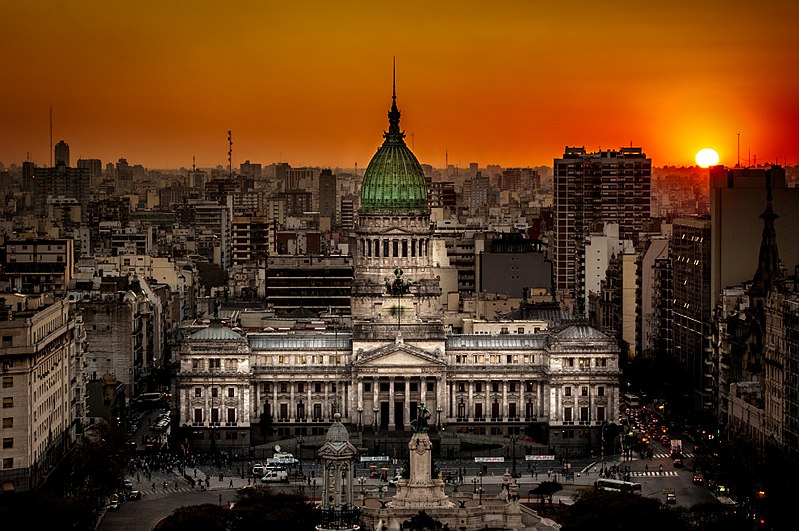
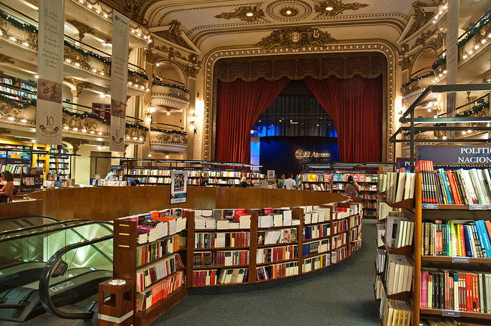
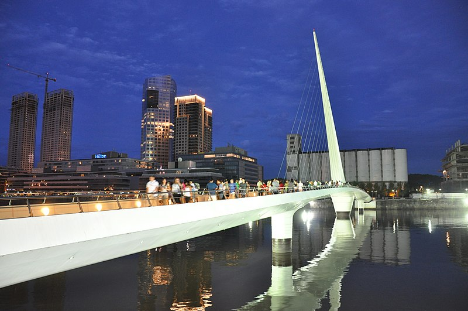
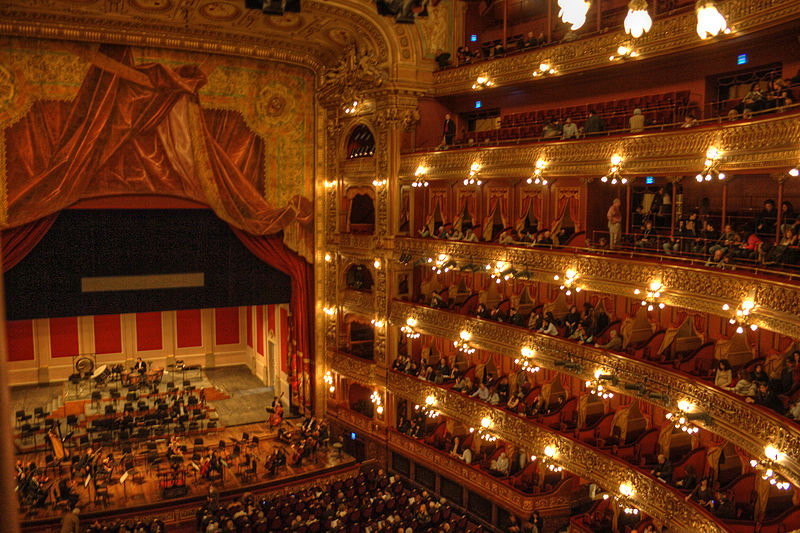
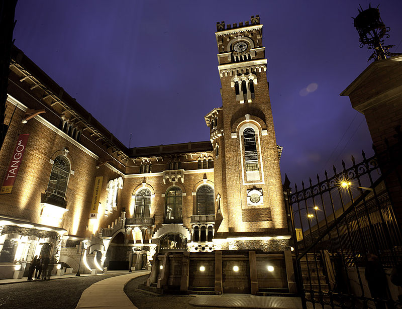
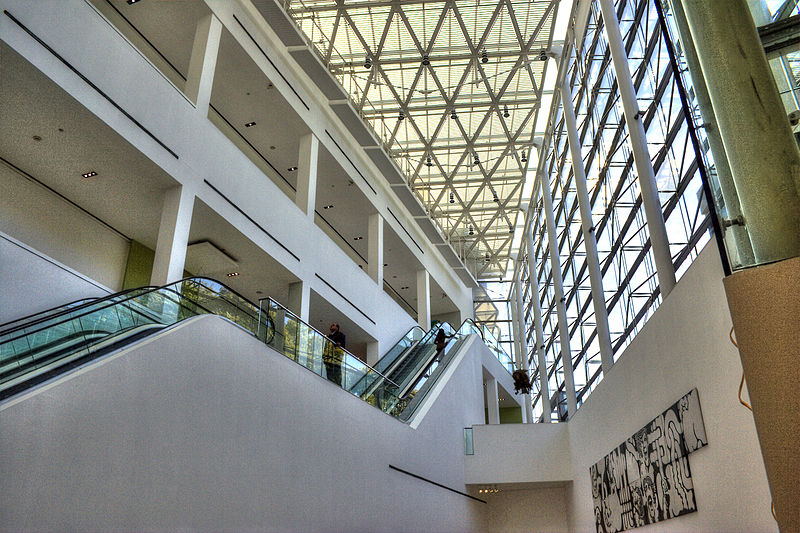
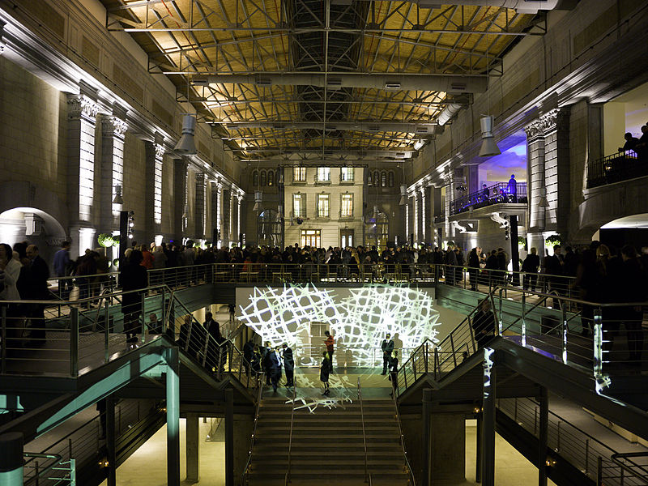
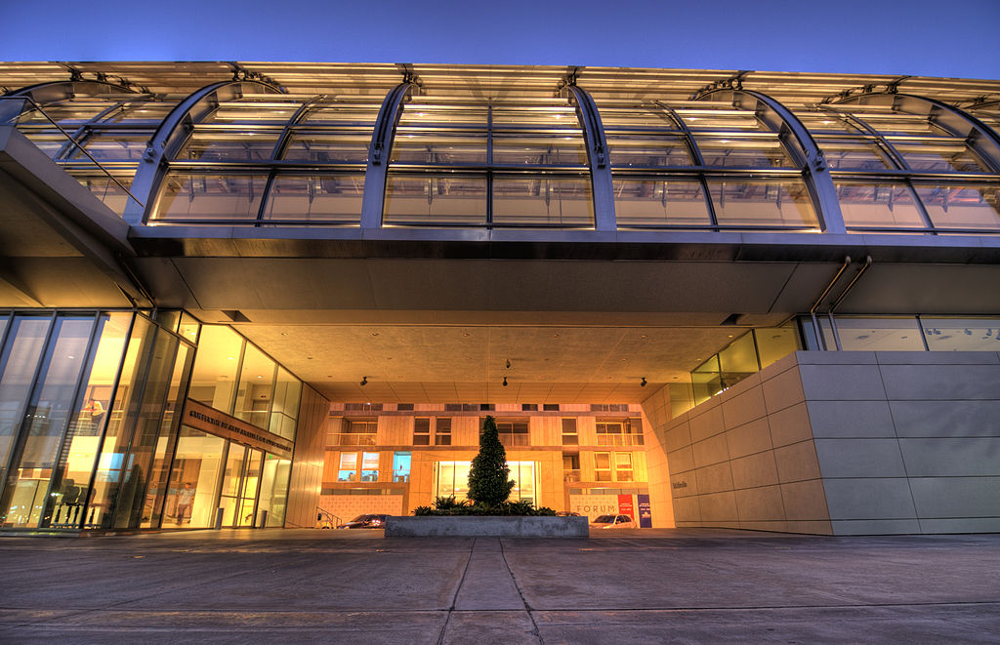

Palacio del Congreso de la Nación.

La librería El Ateneo fue elegida la segunda librería más hermosa del mundo.

El Puente de la Mujer de noche.Barrio de Puerto Madero.

El Teatro Colón es uno de los cinco teatros de ópera más importantes del mundo.

Usina del Arte, un centro cultural y de espectáculos

Interior del MALBA.

Foyer de la Usina del Arte durante la noche.

Colección de Arte Fortabat.